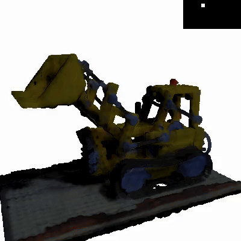

{kind=link}
News
- Feb, 2024: Paper accepted in Computers & Graphics.
- Jun, 2025: Website launched.
Abstract
We present a method for estimating the intrinsic components of a dynamic scene captured with multi-view video sequences. Unlike previous work focused either on static scenes or single view videos, our method simultaneously addresses the challenges of dealing with the extra computational complexity given by the dynamic motion while enabling novel view synthesis. Key to our method to make the output temporally consistent is to encode the temporal information in a latent embedding that leverages the redundant information of the dynamic scene. Our intrinsic components includes diffuse and specular albedo, as well as scene geometry and environment illumination. We explicitly account for light visibility, which we estimate efficiently by considering dynamic and static points separately, making the problem computationally tractable. We demonstrate the effectiveness of our approach through quantitative and qualitative experiments, showing that it outperforms the naïve per-frame decomposition approach in several real-world scenes.
Resources
Results
Overview Video
A short explanatory video of the DyNeRFactor method, showcasing its motivation and key results.
Key Result GIFs
Illumination 1
|
Illumination 2
|
Illumination 3
|
Illumination 4
|
Orbit View 1
|
Orbit View 2
|
Orbit View 3
|
Orbit View 4 |